Grano Dorado es café tostado y molido gourmet, seleccionado grano a grano para lograr un tueste intenso y equilibrado — 100% calidad, en cada bolsa.
Aroma que envuelve, sabor que perdura.
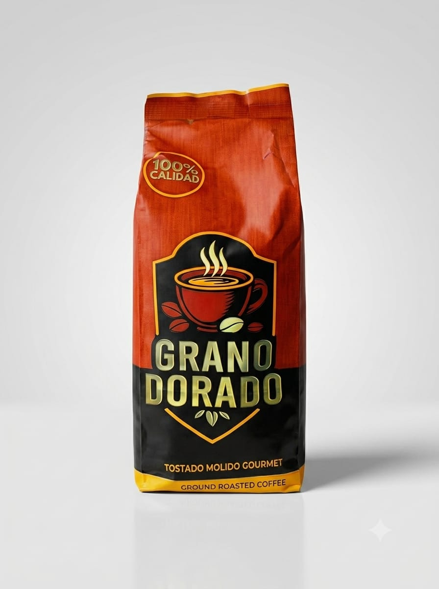
Grano Dorado nace de la pasión por el buen café. Seleccionamos cuidadosamente cada grano y lo tostamos hasta lograr el punto exacto: intenso, aromático y de sabor inconfundible.
No es solo una bolsa de café — es una experiencia, pensada para quienes buscan algo más en cada taza. Cada lote lleva nuestro compromiso: 100% calidad, en el grano, en el tueste, en el resultado final.
Grano Dorado
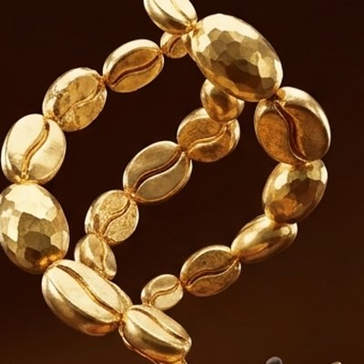
Un proceso cuidado en cada lote, pensado para resaltar el máximo aroma y sabor del grano.
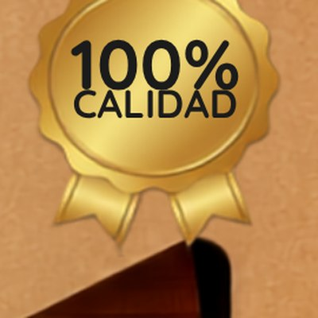
Seleccionamos el grano pensando en la excelencia, no en el volumen. Sin atajos.
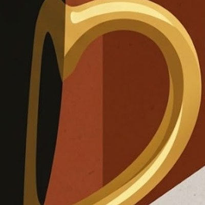
Del primer café de la mañana a la pausa que te mereces en medio del día.
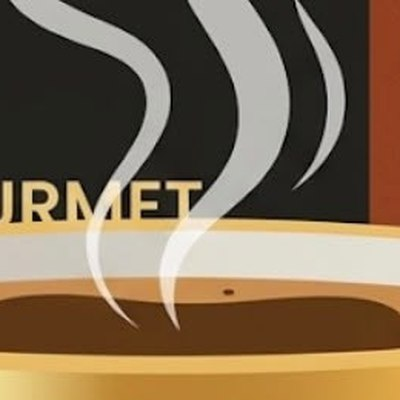
El primer sorbo se siente antes de probarlo. Así reconoces un Grano Dorado.
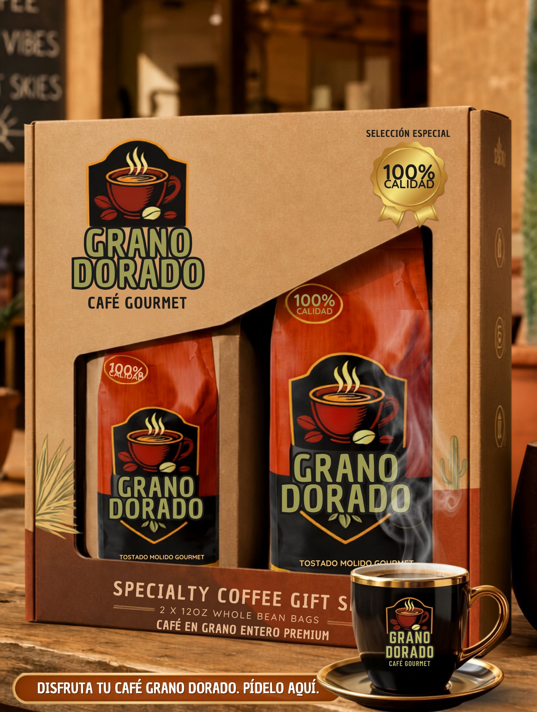
Ser el café gourmet de referencia para quienes buscan convertir un simple hábito en un ritual diario memorable, llevando el mejor grano a cada hogar.
Tostar y moler cada lote con dedicación artesanal, garantizando 100% calidad en cada bolsa y creando momentos extraordinarios alrededor de una taza de café.
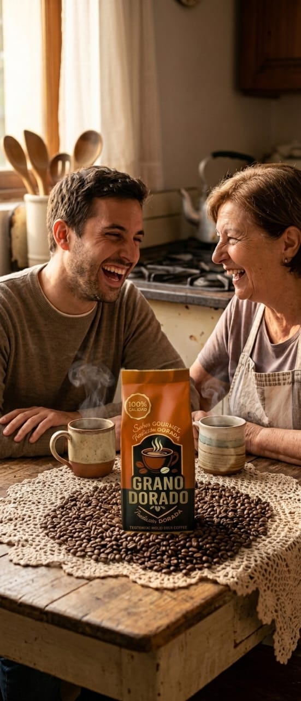
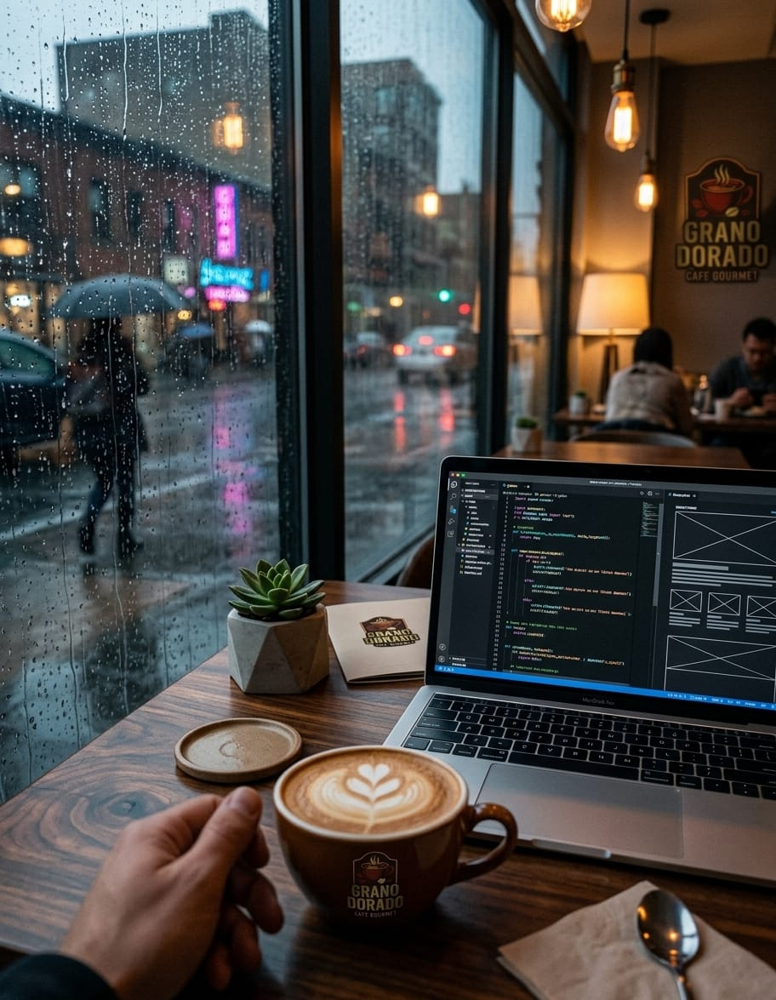
Cada gran café merece su propia alegoría. Le pedimos a distintas corrientes del arte que reinterpretaran Grano Dorado a su manera.
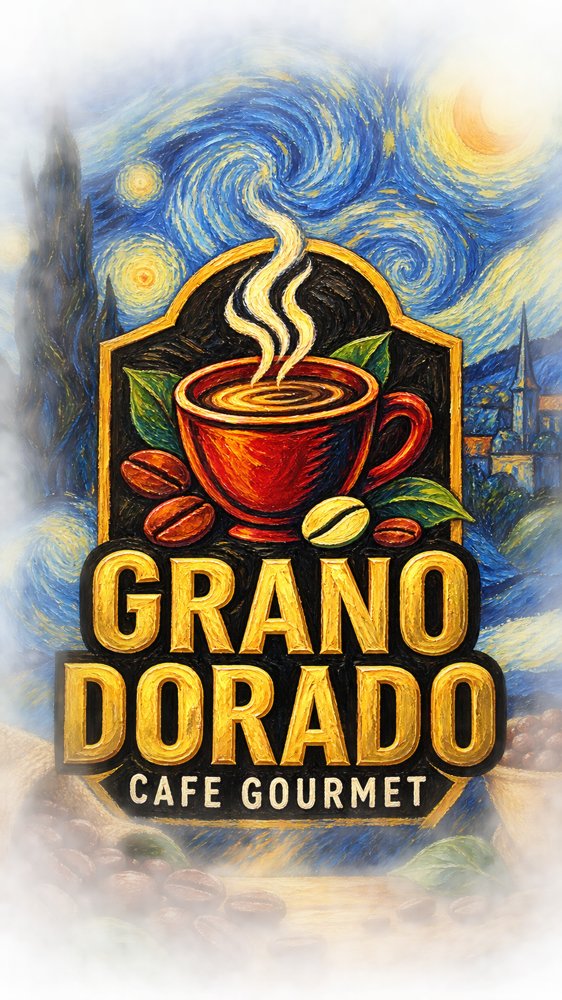
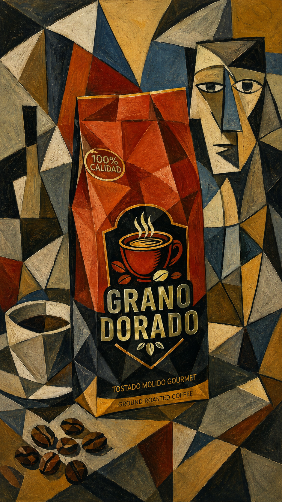
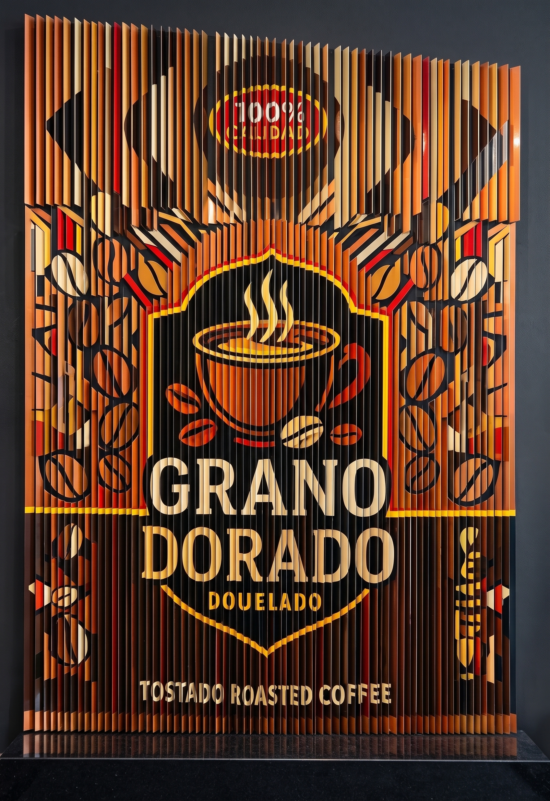
Dos bolsas de café en grano entero premium, presentadas en una caja de regalo pensada para sorprender. Ideal para compartir Grano Dorado con quien más te importa.
También puedes seguirnos en redes para conocer promociones y novedades de Grano Dorado.